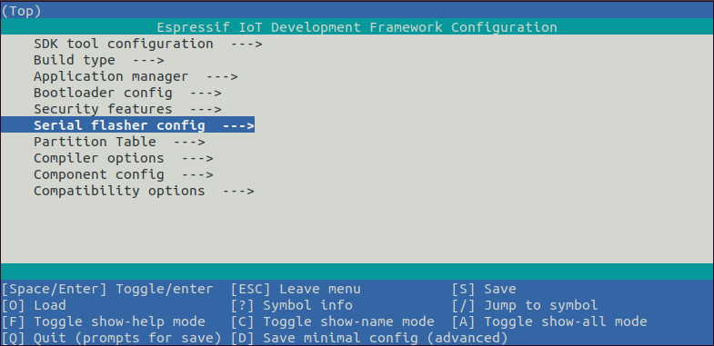

使用命令行创建项目的完整流程#
实验规约#
由于实验机房中是多人共享实验机器，因此，为了避免不同小组之间的文件 冲突，必须要求，每组甚至每人都应该有自己单独的目录，大家实验的时候在自己的目录上 code 和 debug，尽量不要影响其他组的文件。
代码目录#
对于每一个组，建议创建如下格式目录作为自己组的目录
GROUPNMAE= 1.11 # 例如代表1班第11组
mkdir ~/code/$GROUPNAME/esp32/
代码源#
对于源代码，一个非常错误的方法是从esp/esp-idf/sample里面去拷贝，因为很多同学直接在这里操作文件，而往往这里的文件已经不干净了。我们要求从指定的地址下载干净的源代码。
正确的带有注释的代码在 参考资料与源代码处下载
接下来，就可以开始从命令行开始创建并调试项目了。
第一步：创建项目#
现在，您可以开始准备开发 ESP32 应用程序了。假设我要重头开始创建 hellow-world 工程
# 进入项目目录
cd ~/code/$GROUPNAME/esp32/
# 获取idf所需的环境和工具
get-idf
# 创建hellow-world工程
idf.py create-project hellow-world
# 检查下目录下发生了什么
tree -L 2
❗注意：
ESP-IDF 编译系统不支持带有空格的路径！！！
第二步：连接设备#
现在，请将 ESP32 开发板连接到 PC，并查看开发板使用的串口。
我们使用的 ESP-WROVER-KIT 开发板一般会有如下两个 ttyUSB 口：
数字较小的为 JATG 接口，较大的为串口接口。
ls -l /dev/ttyUSB*
crw-rw----+ 1 root plugdev 188, 0 7月 27 14:31 /dev/ttyUSB0
crw-rw----+ 1 root plugdev 188, 1 7月 27 14:31 /dev/ttyUSB1
此处的用户群组 plugdev 可能会有出入，具体原因是对JAGT进行了 USB 驱动配置，会在下一章 ESP-IDF JTAG 调试流程 中提及。
请记住串口名，在下面的步骤中会使用到。
第三步：设置目标芯片#
打开一个新项目后，应首先设置“目标”芯片 。乐鑫有 esp32, esp32-s2, esp32-s3,esp32-c 以及 esp32-h 等多种架构
# 我们的开发版目标芯片是ESP32
idf.py set-target esp32
# 检查下目录下发生了什么
tree -L 2
第四步：配置参数#
运行工程配置工具 menuconfig。
idf.py menuconfig
注意，此操作将清除并初始化项目之前的编译和配置（如有）。 也可以直接将“目标”配置为环境变量（此时可跳过该步骤）。
如果之前的步骤都正确，则会显示下面的菜单：

您可以通过此菜单设置项目的具体变量，包括 Wi-Fi 网络名称、密码和处理器速度等. hello_world 示例项目会以默认配置运行，因此可以跳过使用 menuconfig 进行项目配置这一步骤。
关于menuconfig, 以后还会有更多介绍。
第五步：编写代码#
在 main 目录下编写代码，程序入口点为void app_main(void)
也可以从实验源代码处下载。
第六步：编译#
请使用以下命令，编译烧录工程：
idf.py build
运行以上命令可以编译应用程序和所有 ESP-IDF 组件，接着生成 bootloader、分区表和应用程序二进制文件。
$ idf.py build
Running cmake in directory /path/to/hello_world/build
Executing "cmake -G Ninja --warn-uninitialized /path/to/hello_world"...
Warn about uninitialized values.
-- Found Git:/usr/bin/git (found version "2.17.0")
-- Building empty aws_iot component due to configuration
-- Component names: ...
-- Component paths: ...
... (more lines of build system output)
[527/527] Generating hello_world.bin
esptool.py v2.3.1
Project build complete. To flash, run this command:
../../../components/esptool_py/esptool/esptool.py -p (PORT) -b 921600 write_flash --flash_mode dio --flash_size detect --flash_freq 40m 0x10000 build/hello_world.bin build 0x1000 build/bootloader/bootloader.bin 0x8000 build/partition_table/partition-table.bin
or run 'idf.py -p PORT flash'
如果一切正常，编译完成后将生成 .bin 文件。
第七步：烧录程序#
请使用以下命令，将刚刚生成的二进制文件 (bootloader.bin, partition-table.bin 和 hello_world.bin) 烧录至您的 ESP32 开发板：
idf.py -p PORT flash
请将 PORT 替换为 ESP32 开发板的串口名称，具体可见 第二步：连接设备。
还可以将 BAUD 替换为你希望的烧录波特率。默认波特率为 460800。
当终端出现如下信息时，按下 Boot 按键直到烧录进度百分比开始变化
[ 98%] Built target __idf_spiffs
[ 99%] Built target __idf_fatfs
[ 99%] Built target __idf_esp_local_ctrl
[100%] Built target __idf_wifi_provisioning
[100%] Built target __idf_main
[100%] Built target __ldgen_output_sections.ld
[100%] Built target blink.elf
[100%] Built target gen_project_binary
blink.bin binary size 0x2b9e0 bytes. Smallest app partition is 0x100000 bytes. 0xd4620 bytes (83%) free.
[100%] Built target app_check_size
[100%] Built target app
esptool.py esp32 -p /dev/ttyUSB2 -b 460800 --before=default_reset --after=hard_reset write_flash --flash_mode dio --flash_freq 40m --flash_size 2MB 0x1000 bootloader/bootloader.bin 0x10000 blink.bin 0x8000 partition_table/partition-table.bin
esptool.py v3.3-dev
Serial port /dev/ttyUSB2
Connecting..............
按下后将会继续进行烧录，终端出现如下显示，烧录进度百分比开始变化即可松开
Connecting..............
Chip is ESP32-D0WD (revision 1)
Features: WiFi, BT, Dual Core, 240MHz, VRef calibration in efuse, BLK3 partially reserved, Coding Scheme 3/4
Crystal is 40MHz
MAC: 30:ae:a4:cc:3f:7c
Uploading stub...
Running stub...
Stub running...
Changing baud rate to 460800
Changed.
Configuring flash size...
Flash will be erased from 0x00001000 to 0x00007fff...
Flash will be erased from 0x00010000 to 0x0003bfff...
Flash will be erased from 0x00008000 to 0x00008fff...
Compressed 25280 bytes to 15813...
Writing at 0x00001000... (100 %)
Wrote 25280 bytes (15813 compressed) at 0x00001000 in 0.8 seconds (effective 252.9 kbit/s)...
Hash of data verified.
Compressed 178656 bytes to 92861...
Writing at 0x00010000... (16 %)
Writing at 0x0001bc70... (33 %)
Writing at 0x00021476... (50 %)
Writing at 0x0002713f... (66 %)
Writing at 0x0002f761... (83 %)
Writing at 0x00037913... (100 %)
如果一切顺利，烧录完成后，开发板将会复位，应用程序 “hello_world” 开始运行。
烧录过程中可能遇到的问题
如果在运行给定命令时出现如“连接失败”这样的错误，原因之一则可能是运行 esptool.py 出现错误。esptool.py 是构建系统调用的程序，用于重置芯片、与 ROM 引导加载器交互以及烧录固件的工具。解决该问题的一个简单的方法就是按照以下步骤进行手动复位。如果问题仍未解决，请参考 Troubleshooting 获取更多信息。
esptool.py 通过使 USB 转串口转接器芯片（如 FTDI 或 CP210x）的 DTR 和 RTS 控制线生效来自动复位 ESP32（请参考 与 ESP32 创建串口连接 获取更多详细信息)。DTR 和 RTS 控制线又连接到 ESP32 的 GPIO0 和 CHIP_PU (EN) 管脚上，因此 DTR 和 RTS 的电压电平变化会使 ESP32 进入固件下载模式。相关示例可查看 ESP32 DevKitC 开发板的 原理图。
一般来说，使用官方的 esp-idf 开发板不会出现问题。但是，esptool.py 在以下情况下不能自动重置硬件。
您的硬件没有连接到 GPIO0 和 CIHP_PU 的 DTR 和 RTS 控制线。
DTR 和 RTS 控制线的配置方式不同
根本没有这样的串行控制线路
根据您硬件的种类，也可以将您 ESP32 开发板手动设置成固件下载模式（复位）。
对于 Espressif 的开发板，您可以参考对应开发板的入门指南或用户指南。例如，可以通过按住 Boot 按钮 (GPIO0) 再按住 EN 按钮(CHIP_PU) 来手动复位 esp-idf 开发板。
对于其他类型的硬件，可以尝试将 GPIO0 拉低。
第八步：监视程序运行#
你可以使用 idf.py -p PORT monitor 命令，监视 “hello_world” 工程的运行情况。注意，不要忘记将 PORT 替换为你的串口名称。
运行该命令后，IDF 监视器 应用程序将启动：:
$ idf.py -p /dev/ttyUSB0 monitor
Running idf_monitor in directory [...]/esp/hello_world/build
Executing "python [...]/esp-idf/tools/idf_monitor.py -b 115200 [...]/esp/hello_world/build/hello_world.elf"...
--- idf_monitor on /dev/ttyUSB0 115200 ---
--- Quit: Ctrl+] | Menu: Ctrl+T | Help: Ctrl+T followed by Ctrl+H ---
ets Jun 8 2016 00:22:57
rst:0x1 (POWERON_RESET),boot:0x13 (SPI_FAST_FLASH_BOOT)
ets Jun 8 2016 00:22:57
...
此时，你就可以在启动日志和诊断日志之后，看到打印的 “Hello world!” 了。
...
Hello world!
Restarting in 10 seconds...
This is esp32 chip with 2 CPU core(s), WiFi/BT/BLE, silicon revision 1, 2MB external flash
Minimum free heap size: 298968 bytes
Restarting in 9 seconds...
Restarting in 8 seconds...
Restarting in 7 seconds...
可使用快捷键 Ctrl+]，退出 IDF 监视器。
至此，你已经完成 ESP-IDF 命令行的基本流程。